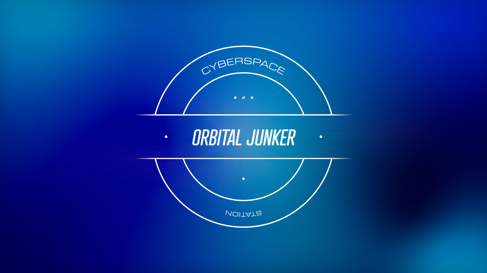
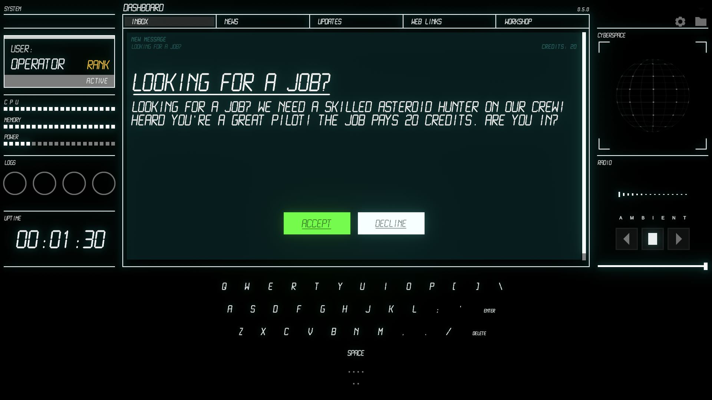
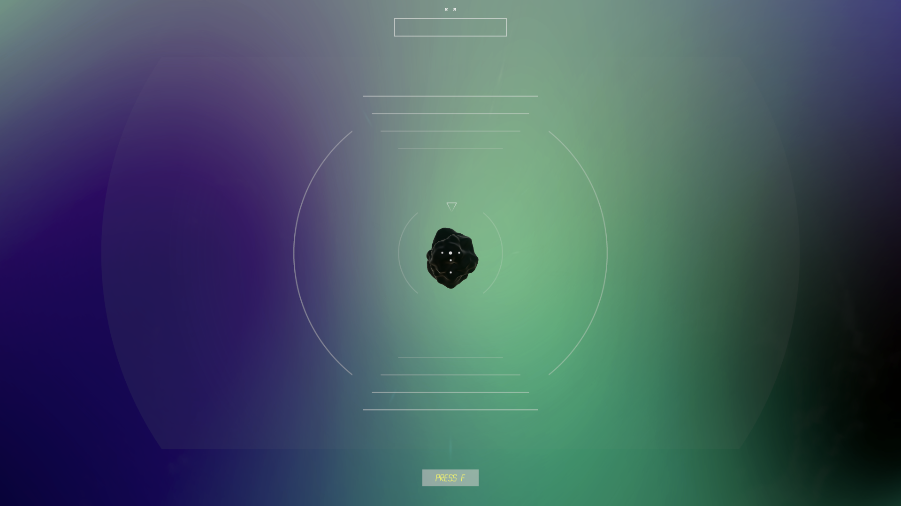

WE ARE OF EARTH
ORBITAL JUNKER FIRST LOOK

click below to begin your mission briefing



Ready for your first mission?
A nostalgic tribute to the analog sci-fi era inspired by the retro-futuristic tech aesthetic and humanities technological development, “Cyberspace Station: Orbital Junker” is a modern take on the classic arcade shooter mixed with a narrative story experience wrapped in a job-sim, featuring a minimalistic employee UI/UX, an anthology of funny flash-fiction stories, random facts, and nebulas that create a beautiful ambient gameplay experience.
You play as a newbie trainee responsible for spotting, tracking, and destroying asteroids and other space junk in service of the galactic expansion effort, all from the comfort of your virtual workstation.
See you soon, Space Cowboy!
Log in to your Console, check your inbox, accept jobs, complete jobs, and get rewarded for your progress and accomplishments!
Practice piloting through an interplanetary transport network of space highways while operating the asteroid-busting weapons system.
Take a break and read first-hand accounts from other pilots and operator crews, gather knowledge from mission reports, memorize tips and tricks, and stay up to date on all the news from around the galaxy.
..and last but not least bonus music booster packs every update!
- This preview is optimized for chrome, if you would like a mac/pc download please contact us!
Genre:
Casual RPG w/ Arcade gameplay
Platforms:
iOS and Quest
Send us an email
TOP